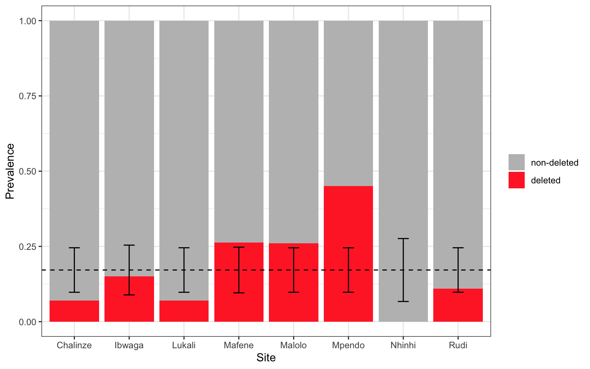
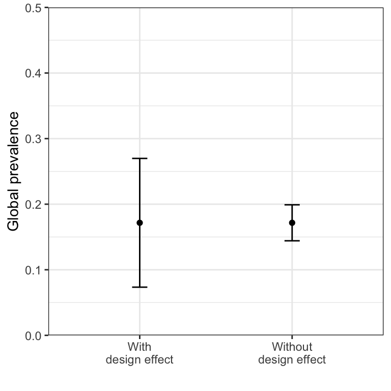

| Site | Confirmed Malaria (n) |
pfhrp2 Deleted (x) |
pfhrp2 Deletion Prevalence (p) |
|---|---|---|---|
| Chalinze | 100 | 7 | 0.070 |
| Ibwaga | 80 | 12 | 0.150 |
| Lukali | 100 | 7 | 0.070 |
| Malolo | 100 | 26 | 0.260 |
| Mafene | 95 | 25 | 0.263 |
| Mpendo | 100 | 45 | 0.450 |
| Nhinhi | 50 | 0 | 0.000 |
| Rudi | 100 | 11 | 0.110 |
Table 1: pfhrp2 deletion data broken down by site |
Activity 4: Dealing with over-dispersion in multi-cluster studies
Introduction
Welcome to Activity 4: Dealing with over-dispersion in multi-cluster studies
In this activity, we will consider some of the features of multi-cluster studies that separate them from single-cluster studies. Very often in malaria surveillance we want to pool information over multiple sites. These could be health facilities, towns, or even regions of a country. By combining information over sites we can estimate the average value of some quantity of interest - for example the prevalence of a drug resistance mutation - without being too highly influenced by local variations. However, when pooling results, care must be taken not to overstate the amount of information we have. This is particularly true if data are over-dispersed, meaning there is more variation between sites than expected. In this case, our sample size is effectively diminished and in some cases power can be badly affected.
Learning Outcomes
By the end of this tutorial, you will be able to:
- Detect over-dispersion
- Quantify over-dispersion using metrics including the design effect, effective sample size, and intra-cluster correlation coefficient
- Understand the impact of over-dispersion on statistical efficiency
- Construct confidence intervals and perform hypothesis tests while accounting for over-dispersion
Disclaimer: The scenarios in this document are entirely fictitious. While real place names are used, the data itself is artificial and designed for teaching purposes only. It does not necessarily represent the real epidemiological situation in these locations.
Analyzing data from a multi-cluster pfhrp2 deletion study
Background
You are collaborating with the Tanzanian National Malaria Control Programme (NMCP) to investigate the prevalence of pfhrp2/3 gene deletions in the Dodoma region of Tanzania. These gene deletions pose a significant threat to malaria control efforts as they can lead to parasites being undetectable by rapid diagnostic tests (RDTs) that rely exclusively on the HRP2 protein. Undetected cases may lead to delays in treatment or missed malaria diagnoses, undermining effective case management.
A multi-cluster study has been performed in 8 sites within the Dodoma region. The results of this study are shown below:
In the R chunks below, you will be able to access these columns through the variables n, x, and p, as shown here:
# you can access the following vectors
n
x
pEstimating the global prevalence
We want to use the information over all 8 sites to estimate the prevalence of pfhrp2 deletions in the Dodoma region as a whole. This is often called the “global” prevalence estimate. We will use \(\hat{p}\) to denote the global prevalence, and \(\hat{p}_i\) to denote the site-level prevalence in the \(i^\text{th}\) site.
A common way to calculate \(\hat{p}\) is to take the mean over sites.
\[ \hat{p} = \frac{1}{c} \sum_{i=1}^c \hat{p}_i \]
where there are \(c\) sites, so in our case \(c = 8\).
Complete the following R code to calculate p_global as the mean prevalence over sites. The values in Table 1 are available through the variables n, x and p.
# calculate p_global as mean prevalence over sites
p_global <-
print(p_global)# calculate p_global as mean prevalence over sites
p_global <- mean(p)
print(p_global)Click to see the answer
You should find that \(\hat{p} = 0.172\), or 17.2% prevalence.
This calculation ignores differences in sample sizes between sites. For example, the Nhinhi site is given just as much weight as the Rudi site, despite having half the number of confirmed malaria cases. A different approach is to calculate \(\hat{p}\) as the weighted average of the site-level prevalence, where the weights are given by the sample sizes. This is mathematically equivalent to summing the numerator and the denominators separately before dividing:
\[ \hat{p} = \frac{\sum_{i=1}^c x_i}{\sum_{i=1}^c n_i} \]
Complete the following R code to calculate p_global as the weighted mean prevalence over sites:
# calculate p_global as weighted mean prevalence over sites
p_global <-
print(p_global)# calculate p_global as weighted mean prevalence over sites
p_global <- sum(x) / sum(n)
print(p_global)Click to see the answer
You should find that \(\hat{p} = 0.183\), or 18.3% prevalence.
In this example, prevalence is slightly higher via the weighted mean than the ordinary mean. Neither approach is more correct than the other, rather they have different strengths and weaknesses. The unweighted mean treats each site as a single observation, which is a robust approach when there is the possibility of over-dispersion. On the other hand, the weighted mean avoids small clusters having a large influence on the final estimate. For the purposes of this activity, we will use the unweighted mean as our global estimate.
Detecting over-dispersion
Now that we have an estimate of the global prevalence, we can look for over-dispersion in the data. If all patients enrolled in the study were completely independent, meaning they all had the same probability \(\hat{p}\) of carrying the pfhrp2 deletion, then we would expect to see a certain level of variation between sites. Most of the time, the site-level prevalence should be within the following 95% interval: \[ \hat{p} \pm z_{1 - \alpha/2}\sqrt{\frac{\hat{p}(1 - \hat{p})}{n_i}} \] where \(n_i\) is the sample size in the \(i^{\text{th}}\) site. Because this is a 95% interval, we should expect sites to fall within this range around 95% of the time. For our study involving 8 sites, we may see one site-level prevalence outside this range by chance, but it would be very unusual to see more than one outside this range.
The plot below shows the site-level prevalence in red. The global mean prevalence of 17.2% is shown as a horizontal dashed line, and the 95% interval is shown as an error bar.

Quantifying over-dispersion
The design effect
One way of quantifying the effect of over-dispersion is through the design effect, denoted \(D_{\text{eff}}\). We can estimate the design effect by calculating the observed variance between sites and dividing this by the variance that we would expect under simple random sampling (SRS). If the data are over-dispersed then the observed variance will be greater than the expected variance, meaning \(D_{\text{eff}}\) will be greater than 1.
The observed variance between sites can be calculated as:
\[ \text{Var}_{\text{obs}} = \frac{1}{c-1}\sum_{i=1}^c (\hat{p}_i - \hat{p})^2 \]
This formula is called the sample variance, it is found in many areas of statistics. We don’t need to calculate this value by hand, instead we can do it very easily in R using the var() function:
# calculate observed variance between sites
var_observed <- var(p)
print(var_observed)[1] 0.02114684Next, we need to calculate the variance that we would expect to see under simple random sampling (SRS). This is given by:
\[ \text{Var}_{\text{SRS}} = \frac{1}{c} \sum_{i=1}^c \frac{\hat{p}(1 - \hat{p})}{n_i} \] We can calculate this in R as follows:
# calculate expected variance under SRS
var_SRS <- mean(p_global*(1 - p_global) / n)
print(var_SRS)[1] 0.001653192We calculate the design effect as the ratio of these two quantities: \[ D_{\text{eff}} = \frac{\text{Var}_{\text{obs}}}{\text{Var}_{\text{SRS}}} \] Complete the following R code to calculate the design effect:
# calculate design effect from the variances
Deff <-
print(Deff)# calculate design effect from the variances
Deff <- var_observed / var_SRS
print(Deff)Click to see the answer
You should find that \(D_{\text{eff}} = 12.79\).
The design effect is a measure of the statistical inefficiency of a study design. Larger values indicate less efficient designs, with a value of \(D_{\text{eff}}=1\) representing a gold standard in terms of statistical efficiency. Our observed value of \(D_{\text{eff}}=12.79\) indicates that our study has a high level of statistical inefficiency due to the over-dispersion in the data.
The effective sample size
Another way to quantify the impact of over-dispersion is through the effective sample size, \(N_{\text{eff}}\). The effective sample size tells us how many perfectly independent samples we would need in order to achieve the same level of statistical efficiency. In other words, it tells us how large our study would need to be if we could get rid of over-dispersion completely. We calculate \(N_{\text{eff}}\) by dividing the true total sample size by the design effect:
\[ N_{\text{eff}} = \frac{\sum_{i=1}^c n_i}{D_{\text{eff}}} \]
Complete the following R code to calculate an effective sample size:
# calculate effective sample size based on total sample size and design effect
Neff <-
print(Neff)# calculate effective sample size based on total sample size and design effect
Neff <- sum(n) / Deff
print(Neff)Click to see the answer
You should find that \(N_{\text{eff}} = 56.7\).
Our effective sample size is just 56.7, even though our total sample size was 725. Amazingly, this means that - from the point of view of estimating prevalence - it’s as though we had enrolled only 56 patients! The high correlation within sites meant that we were effectively sampling the same “sort” of individual over and over again. We may have been better off recruiting more sites rather than sampling deeply within a site to avoid this issue.
The intra-cluster correlation coefficient
The third and final measure that we will consider is the intra-cluster correlation coefficient (ICC), denoted \(r\). This is a measure between 0 and 1 that describes how correlated observations are within a cluster (site). If there is correlation with clusters then there must be over-dispersion in the data, and likewise if data are over-dispersed then there must be intra-cluster correlation greater than 0.
The relationship between the ICC and the design effect is:
\[ D_{\text{eff}} = 1 + r(\bar{n} - 1) \] where \(\bar{n}\) is the mean sample size over sites. Notice that when \(r\) is zero the design effect equals 1, indicating that we are as statistically efficient as under simple random sampling. The larger the value of \(r\), the higher the design effect and the more inefficient our design.
We can flip this equation around to give us the ICC as a function of the design effect:
\[ r = \frac{D_{\text{eff}} - 1}{\bar{n} - 1} \]
Complete the following R code to calculate the value of the ICC from the design effect that we estimated above:
# calculate the mean sample size
n_bar <-
# calculate the ICC
ICC <-
print(ICC)# calculate the mean sample size
n_bar <- mean(n)
# calculate the ICC
ICC <- (Deff - 1) / (n_bar - 1)
print(ICC)Click to see the answer
You should find that \(r = 0.132\).
The ICC can be harder to interpret than other measures like the design effect or effective sample size, but it does have certain advantages. We can think of the ICC as an intrinsic property of the population, while the design effect is only a measure of the inefficiency of our study. While \(D_{\text{eff}}\) is influenced by \(r\), it is also influenced by many other factors, most notably the sample size. If we were to double the sample size of a study then our design effect would change, but the ICC would stay exactly the same. This makes it straightforward to compare values of \(r\) between studies, while we have to take great care when comparing values of \(D_{\text{eff}}\).
Accounting for over-dispersion
We have seen what over-dispersion looks like in prevalence data, and how it can be quantified. Now we will learn how to incorporate over-dispersion into our design and analysis phases so we can be robust to its effects.
Over-dispersion and confidence intervals
Let’s look again at the pfhrp2/3 data from Dodoma region:
| Site | Confirmed Malaria (n) |
pfhrp2 Deleted (x) |
pfhrp2 Deletion Prevalence (p) |
|---|---|---|---|
| Chalinze | 100 | 7 | 0.070 |
| Ibwaga | 80 | 12 | 0.150 |
| Lukali | 100 | 7 | 0.070 |
| Malolo | 100 | 26 | 0.260 |
| Mafene | 95 | 25 | 0.263 |
| Mpendo | 100 | 45 | 0.450 |
| Nhinhi | 50 | 0 | 0.000 |
| Rudi | 100 | 11 | 0.110 |
Table 1: pfhrp2 deletion data broken down by site |
We already estimated the prevalence in the region as the mean over sites, giving \(\hat{p} = 0.172\). Now we want to construct a 95% CI around this estimate. For this, we need a modified version of the Wald interval:
\[ \hat{p} \pm z_{1 - \alpha/2}\sqrt{\frac{\hat{p}(1 - \hat{p})}{N} D_{\text{eff}}} \] Here, \(N\) is the total sample size summed over all sites, which in our case is \(N = 725\). The main difference from our previous version of the Wald interval is the inclusion of the design effect, \(D_{\text{eff}}\). Notice that \(D_{\text{eff}}\) stretches the interval, meaning a higher design effect would lead to greater uncertainty.
Complete the following R code to calculate a 95% CI on the global prevalence using this new version of the Wald formula. Note that you still have access to previously computed variables in this code box, including n, x, p, p_global and Deff:
# get total sample size and z
N <-
z <- 1.96
# calculate margin of error
m <-
# calculate lower and upper limits
CI_lower <-
CI_upper <-
print(c(CI_lower, CI_upper))# get total sample size and z
N <- sum(n)
z <- 1.96
# calculate margin of error
m <- 1.96*sqrt(p_global*(1 - p_global) / N * Deff)
# calculate lower and upper limits
CI_lower <- p_global - m
CI_upper <- p_global + m
print(c(CI_lower, CI_upper))Click to see the answer
You should find that the CI ranges from 0.073 to 0.270, or in other words from 7.3% to 27.0%.
This CI is considerably wider than we would have obtained if we did not take over-dispersion into account. The two intervals are shown below:

If we ignored over-dispersion and treated all observations as independent, we would be in danger of over-confidence in our global prevalence estimate.
Over-dispersion and hypothesis testing
Similarly, when it comes to hypothesis testing, we have to factor over-dispersion into our analysis. For example, imagine we want to compare our global estimate of the prevalence of pfhrp2 deletions against a defined threshold of 10%. The appropriate statistical test here is the one-sample z-test for proportions, which we covered in an earlier module. However, we need to use a new formula for the test statistic (\(Z\)) that factors in the design effect:
\[ Z = \frac{|\hat{p} - h|}{\sqrt{\frac{\hat{p}(1 - \hat{p})}{N}D_{\text{eff}}}} \] Where \(h\) is the threshold we are comparing against (\(h = 0.1\)).
This can be calculated in R as follows:
# define threshold
h <- 0.1
# calculate test statistic
Z <- abs(p_global - h) / sqrt(p_global * (1 - p_global) / N * Deff)
print(Z)[1] 1.430108We obtain a test statistic of \(Z = 1.43\). This is within the critical range \(\pm1.96\), meaning we would not reject the null hypothesis. However, if we were to run the same analysis but ignoring the design effect, we would find \(Z = 5.11\). This is highly significant, and would result in us rejecting the null hypothesis. This is an example where over-dispersion is critically important, as it dictates the result of our hypothesis test. For something like a pfhrp2/3 study, this could mean difference between switching RDTs nationwide vs sticking with the current brand.
Disclaimer: We do not advocate for the use of the z-test for the design pfhrp2/3 deletion studies, or the analysis of the resulting data. We will learn about a much more powerful approach to this problem in the next module.
Over-dispersion and power
Addressing over-dispersion is just as critical in the design stage as it is in the analysis stage. For the one-sample z-test for proportions, we already saw the formula for power in a previous module. Now, we obtain a new formula that takes \(D_{\text{eff}}\) into account:
\[ P_{\text{ow}} = 1 - \phi\left(z_{1-\alpha/2} - \frac{|p - h|}{\sqrt{\frac{p(1-p)}{N}}D_{\text{eff}}} \right) \] To make use of this formula, we have to assume known values for the true global prevalence \(p\) and also the design effect \(D_{\text{eff}}\). We also have to set the total sample size \(N\) and the threshold \(h\). We will assume \(p = 0.2\), \(D_{\text{eff}} = 10\), \(N = 800\) and \(h = 0.1\).
We can calculate the power under this new formula in R as follows:
# define assumed parameters
p <- 0.2
Deff <- 10
N <- 800
h <- 0.1
# define z-values
z_alpha <- 1.96
# calculate expected value of test statistic
mu_alt <- abs(p - h) / sqrt(p * (1 - p) / N * Deff)
# calculate power
power <- 1 - pnorm(z_alpha - mu_alt)
print(power)[1] 0.6087521Under this study design we only have 61% power. Contrast this with power of 99.99998% that we obtain if we ignore the design effect! Clearly the inclusion of the design effect is severely hurting our power in this analysis, however, it is better to include it and be realistic than to ignore it and obtain results that are unreliable.
Over-dispersion and sample size
When it comes to the formula for minimum sample size under the z-test, we cannot assume a known value of the design effect. This is because the design effect itself depends on the sample size, so our reasoning becomes circular. However, we can assume a known value of the ICC (\(r\)).
Our new minimum sample size formula becomes:
\[ n = \frac{1 - r}{\frac{c(p - h)^2}{(z_{1 - \alpha/2} + z_{1 - \beta})^2 p(1-p)} - r} \]
Note that \(n\) is the sample size per cluster, assuming there are \(c\) clusters of equal size. We can calculate this in R as follows:
# define assumed parameters
p <- 0.2 # prevalence of deletions
h <- 0.1 # threshold to compare against
r <- 0.05 # intra-cluster correlation
c <- 8 # number of clusters
# define z-values
z_alpha <- 1.96
z_beta <- qnorm(0.8)
# calculate minimum sample size
n <- (1 - r) / (c*(p - h)^2 / ((z_alpha + z_beta)^2*p*(1 - p)) - r)
print(n)[1] 69.33436Based on this analysis we would need 8 clusters of 70 samples. Compare this with the 8 clusters of just 16 samples we would need if we ignored intra-cluster correlation. Again, if we ignore this effect then we risk running a study that is too small, and ultimately does not have power to detect a real effect.